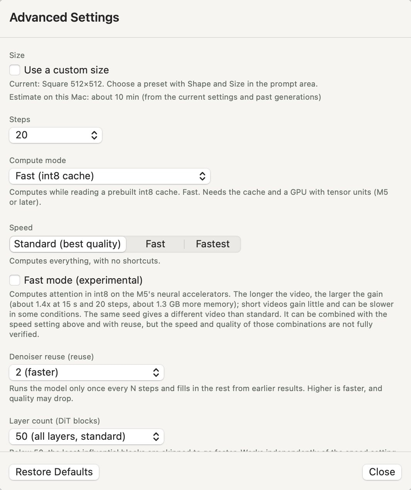

Advanced and General Settings explained
Settings live in two places: “Advanced Settings” for each window's generations, and “General Settings” for the whole app. This page explains what each item changes, in the order the screens show them. The defaults are fine to start with. Come back here when you want to tune the wait or the result. This page follows H3cApp v0.7.1.
Advanced Settings: overview and opening
Open it with the “Advanced Settings” button at the top right of the prompt panel, or with ⌘,. These settings belong to each window and are used for that window's generations. Changes apply from the next generation; changing something while a video is being generated doesn't affect that run.
When anything differs from the defaults, the button reads “Advanced Settings · modified”.

| Item | Default | Values | Main effect |
|---|---|---|---|
| Size | Preset (square, medium) | Preset / custom size | Bigger is slower |
| Steps | 20 | 3–40 | More is slower; fewer lowers quality |
| Compute mode | Fast (int8 cache) on M5-class Macs, otherwise Low memory (SSD streaming) | 3 modes | Speed, and the memory and disk needed |
| Speed | Standard (best quality) | Standard (best quality) / Fast / Fastest | Faster, but the result changes |
| Fast mode (experimental) | Off | On / off (shown only where supported) | Faster, more so for long videos |
| Denoiser reuse | 2 | 1–3 | Higher is faster; quality may drop |
| Layer count | 50 (all) | 35–50 | Fewer is faster, but can break the audio |
| Clip length for joined generation | About 7 s | About 7 s / About 5 s | Longer means fewer seams |
| Randomness | Random each time | Random each time / Fixed | Whether a result can be reproduced |
| Add-on models (LoRA) | None | Up to 8 | Changes the look or the steps needed |
Size
You normally pick the size with “Shape” and “Size” under the prompt (see Sizes and 2x upscaling). The advanced settings let you enter a size that isn't a preset.
- Use a custom size: lets you enter the “Width” and “Height” of the finished video, in multiples of 32.
- Generate at half size and upscale 2x: generates at half the size, then doubles it. Width and height are then multiples of 64. The upscale happens after generation, so it adds almost no time.
- Limits: the generated size (half the finished size when upscaling) must be at most 600,000 pixels, with each side 256–1344. Beyond that the line turns red and you can't generate as is.
Choosing a preset with “Size” in the prompt panel switches the custom size off again.
Below this section, “Estimate on this Mac: about … min” shows roughly how long the current settings will take. It's worked out from this Mac's past generations, so it gets better as you generate more. If it's expected to take over an hour, a red note appears.
Steps
How many times the video is refined, starting from noise. The default is 20; you can pick 3–40.
- Most of the generation time goes into these steps, so more steps take correspondingly longer.
- Fewer steps are faster but lower the quality of detail and motion.
- Turning on a Turbo LoRA switches to that LoRA's step count (4 or 8) automatically (see Using add-on models).
Compute mode
How the model is loaded and computed. It mainly changes the speed and the memory and disk needed. The modes compute at slightly different precision, so the same seed isn't guaranteed to give exactly the same result in every mode.
| Mode | How it works | Suited to |
|---|---|---|
| Fast (int8 cache) | Computes while reading an int8 cache made in advance. The fastest mode. | GPUs with tensor units (M5 and later). The cache needs about 19.3 GB of disk per model (FL2VA and Ref2VA each need their own). |
| Resident (for plenty of memory, no cache) | Loads the whole model into memory at each launch. No cache is made. | Macs with plenty of memory. Uses about 18 GiB in int8 on M5 and later, or about 37 GiB in BF16 on other Macs. |
| Low memory (SSD streaming) | Computes from the original model, reading only the parts it needs from the SSD. | Any Apple silicon Mac. Uses little memory, but is slower. |
- Building the cache: if you pick Fast (int8 cache) and there's no cache yet, “There is no int8 cache yet.” appears. Click “Build Cache…” to make it inside the app.
- Red notes: with Resident on a Mac with little memory (under 32 GB on M5 and later, under 64 GB otherwise), or with SSD streaming at a large size and 10 seconds or more, the app warns that swapping may make it very slow.
Fast (int8 cache) can only be chosen on an M5-class GPU.
Speed and fast mode (experimental)
“Speed” skips part of the work to go faster. Because what's skipped changes, the composition and details change even with the same seed.
- Standard (best quality): computes everything.
- Fast: reuses the Transformer's results between steps. The app's description gives about 2.7x for the DiT part at 5 seconds and 20 steps. Image quality holds, but the composition differs from Standard.
- Fastest: on top of Fast, computes some tokens together. About 2.9x for the DiT part. Fine detail can get slightly softer.
While Fast or Fastest is selected, denoiser reuse below runs at 1.
Fast mode (experimental)
A separate checkbox shown only on supported M5 setups. Off by default.
- Computes attention in int8 on the M5's neural accelerators.
- The longer the video, the bigger the gain: the app's description gives about 1.4x at 15 seconds and 20 steps, with about 1.3 GB more memory. Short videos gain little and can even be slower in some conditions.
- The video changes even with the same seed. Combinations with the speed setting and reuse haven't been fully tested.
For example, a 512×512, 15-second video on an M5 with 24 GB took 30:08 at Standard and 9:25 with Fastest plus fast mode (see How long it takes on the top page).
Denoiser reuse (reuse)
Runs the model only once every N times and fills in the rest from earlier results, to go faster. The default is 2; you can pick 1–3.
- 1 (standard): runs the model every time.
- 2 (faster): the default.
- 3 (fastest): faster still, but quality may drop.
While the speed is Fast or Fastest, this can't be changed and runs at 1. Your value is kept and used again when you go back to Standard (best quality). With 7 steps or fewer, a value of 2 or more leaves very few real model runs, so a red note appears.
Layer count (DiT blocks)
How many of the model's 50 layers (DiT blocks) to use. The default is 50 (all layers); you can pick 35–50. Below 50, the least influential layers are skipped to go faster. This works independently of the speed setting.
Fewer layers can break the audio. At 45 layers the audio was confirmed to turn into heavy noise, and the video changes too. Leave it at 50 until you're comfortable.
Clip length for joined generation
Lengths over 15 seconds (and “15 s Joined”) are made from short videos, each continuing the one before, joined at an overlap of about 0.9 seconds. This picks how long each of those videos is: about 7 s (the default) or about 5 s.
- Longer clips mean fewer seams.
- The last clip is shorter, to fit what is left.
- It doesn't affect lengths made in one generation (1 to 15 seconds).
See Making longer videos (joined generation) in the guide for how to use it.
Randomness (seed)
How the random number the generation starts from (the seed) is chosen.
- Random each time: the default. Each generation uses a different seed, so the same prompt gives a different video every time.
- Fixed: uses the seed you enter. When you switch to it, the field holds the seed the last generation actually used. Any whole number from 0 to 18446744073709551615 works.
With the same prompt, size, length and settings, the same seed gives the same video, which is handy for comparing the effect of a single setting. Changing the speed, fast mode, the layer count or the compute mode can change the video even with the same seed.
When a project makes several videos in a row with Fixed selected, only the first video uses that seed; the rest get random seeds.
You can see a finished video's seed under “Settings Used…” above the preview, and “Use the Same Seed” puts it back in this field.
Add-on models (LoRA)
Switch the LoRAs registered in the “Model Manager” on or off here and set their strength. “Manage…” opens the Model Manager. You don't need any LoRA to make videos. See Using add-on models (LoRA) in the guide for details.
Restore Defaults and presets
- Restore Defaults: the button at the bottom left of the dialog. Puts every item back to its default and turns off any LoRAs. The size goes back to square, medium.
- Presets: choose “Save Current Settings as Preset…” from “Presets” at the top right of the prompt panel to save the shape, size, length and the advanced settings (LoRAs included) under a name. The prompt isn't included. New windows start from the preset used last.
- Projects: when a project is open, its settings are saved in the project too (see Projects and batches).
General Settings: overview and opening
Open it with “General Settings…” in the app menu (H3cApp) (⌥⌘,). It also opens from “General Settings…” in the panel that the status icon in the toolbar (“Ready” and so on) shows when clicked.
These settings are for the whole app and apply to every window. There are three tabs: “Generation”, “Saved Quality” and “API”. A change made during a generation takes effect from the next video.
| Tab | Item | Default | Main effect |
|---|---|---|---|
| Generation | Speed up the condition computation with an approximation | On | About 10 s faster per video |
| Generation | Show progress previews while generating | Off | Shows a frame as it takes shape (generation time about the same) |
| Saved Quality | Quality of Saved Videos | High | Picture quality and file size |
| API | Let other devices on the same network use the API | Off | Whether other Macs and phones can use the API |
Speeding up the condition computation (General Settings > Generation)
“Speed up the condition computation with an approximation” computes the per-step conditions (AdaLN) from a small approximation file. It is on by default.
- Speed: about 10 s faster per video, in every compute mode.
- First run: the first generation with each model spends about 7 s building a file of about 0.6 GB, shown as “Preparing the computation (first time only)”.
- Result: the approximation error is about the size of the rounding error in the original computation, but the same seed gives a slightly different video than with it off.
Progress previews (General Settings > Generation)
With “Show progress previews while generating” on, the preview area shows a frame of the video taking shape a few times while noise is removed (about five per video), so you can stop early if it isn't what you wanted. Joined generation and batches show them for each video.
- How it works: the finished video the model currently predicts is turned into a picture by a small decoder (taeh3 from madebyollin/taehv, MIT license). The heavy video VAE doesn't run, so generation time barely changes (on an M5, landscape small, 3 s, 20 steps took the same time with and without it).
- First preview: it appears once noise removal is a little way along (around step 3 of 20). Until then the preview area says one is coming.
- What you see: blurry at first, closer to the result with each step. The finished video differs in the details.
- Download: the decoder (22.7 MB) is downloaded the first time you turn this on.
Saved quality (General Settings > Saved Quality)
The quality at which the app saves its videos, in HEVC: generated videos, and also joined exports, enlarged copies and imported videos. The default is “High”.
- Standard: smaller files, about a third of High. Fine blocks can show in bright, smooth areas such as skin.
- High: the default.
- Highest: the blocks all but disappear, but files are about three times the size of High.
A video can't be raised to a higher quality after it is saved. The codec for exports (Export as H.264) and the export quality are chosen when exporting.
API (General Settings > API)
While H3cApp runs, it offers an API that only this Mac can use, so scripts can start generations or check on them. See the API reference for details. This tab gathers what you need to use it.
- Status and address: whether the API is accepting requests, and its address (
http://127.0.0.1:8420), with “Copy” to copy it. - Access token: every API request needs an “
Authorization: Bearer <token>” header. “Show” shows the token and “Copy” copies it. “Regenerate…” makes a new token; the current one stops working at once. - Token file: the token is also written to
~/Library/Application Support/H3cApp/api-token. It normally changes every time the app starts, so have scripts read it from this file each time. “Copy curl Example” copies a command that reads this file and checks the API's status.
Access from other devices
With “Let other devices on the same network use the API” on, other Macs and phones can use the API too, with an address shown there (this Mac's name or IP address) and the token. It is off by default.
- While it is on, the token stays the same when the app quits. Turning it off makes a new token.
- The first time you turn it on, macOS may ask whether to accept incoming network connections.
Traffic is not encrypted. Devices on the same network could read the token, prompts and videos. Use this only on a network you trust, such as your home's.